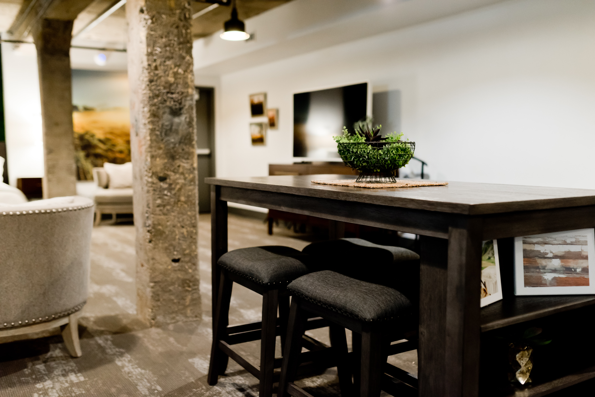
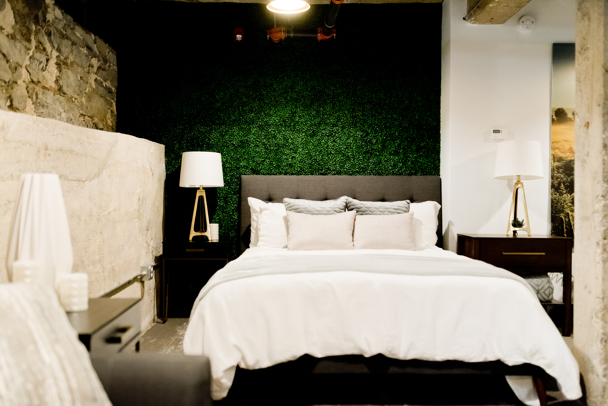

<section class="container">
    <div class="section">
        <ul class="breadcrumb">
            <li><a href="design.html">設計案例</a></li>
            <li><span>|</span></li>
            <li> <a href="design-detail.html">熱愛工業風的貓奴一家三口</a></li>

        </ul>
        <h2 class="article-title">熱愛工業風的貓奴一家三口<span class="material-symbols-outlined">
                pets
            </span></h2>
        <div class="design-title-img">
            
            
        </div>
        <div class="design-content">

            <aside class="design-sidebar">
                <h3><span>物件資訊</span></h3>
                <ul>
                    <li>類　　型 | 新屋客變</li>
                    <li>坪　　數 | 39坪</li>
                    <li>風　　格 | 工業風</li>
                    <li>格　　局 | 三房兩廳</li>
                    <li>平均單價 | 7.5萬/坪</li>
                    <li>裝修時長 | ３個月</li>
                </ul>
                <a href="reserve.html" class="main-btn">馬上諮詢</a>

            </aside>
            <main class="design-main">
                <p>本次案場的男主人熱愛工業風，女主人對工業風並不排斥，但個人偏好明亮一點的風格，因此設計上我們捨棄了一些管線裸露或暗色系的想法，轉而將工業風的一些經典元素和日系風格相融合，像是牆壁與立柱鋪上仿舊的水泥磨石，天花板加上軌道燈，大型家具採用鐵件與經典英倫風沙發為主，其他軟裝則以米色、淺咖啡色輔助，讓空間不會過於暗沉。
                </p>
                <div>
                    <h3>客廳</h3>
                    <p>一進門的地方，視覺會先落在客廳的大沙發上，當初屋主有提到，家中有一位調皮的主子，因此我們選用貓抓布來客製化，雖然少了一點皮革的光澤感，但有效延長沙發使用壽命，也兼顧主子的生活，更符合屋主日常需求！
                    </p>
                    <p>工業風不能缺少的木紋色，我們則選用了一張方形附層板的小桌來呈現，既可以滿足男屋主假日和朋友一起看球賽喝啤酒的小確幸，也可以提供部分收納空間，讓客廳不會凌亂失去焦點！</p>
                </div>
                <div class="design-paragraph">

                    
                    
                </div>
                <div>
                    <h3>主臥室</h3>
                    <p>主臥室內牆壁與公領域採用一致的水泥磨石，地板則選用更深色一點的木紋，床頭板的牆面則加上一點深綠草坪的壁紙，讓整體更有亮點和視覺焦點，寢具與偏高的裝飾家具採用白色和木紋色調搭配，落地的家具則選用鐵件，讓視覺由輕到重更有層次感。
                    </p>
                </div>
                <div class="design-paragraph">
                    
                    

                </div>
                <div class="design-paragraph">
                    <div>
                        <h3>衛浴</h3>
                        <p>女主人喜歡在工作一天後來個熱水澡，考量到女主人使用浴室的時間更長，是一天開始梳化與結束放鬆的空間，和公領域不同，衛浴整體採用白色為主、黑色為輔的手法。</p>
                        <p>梳化打扮使用的產品可放置於隱藏鏡後方，在浴室角落也設置一個防水櫃體，可收納精油、沐浴球、洗髮潤髮等大型瓶罐。</p>
                    </div>
                    
                </div>
                <div class="design-paragraph">
                    <div>
                        <h3>屋主回饋</h3>
                <p>Sollys的服務很棒，會細心了解我們的需求，也會給予很專業的裝潢建議，裝修期間設計師主動拍照並且告知我們目前的進度，讓我們很安心！</p>
                    </div>
                    <div class="design-btn">
                        <a href="design.html" class="main-btn">其他案場<i class="bi bi-chevron-right"></i></a>
                    </div>
                </div>
                
            </main>
        </div>
    </div>
</section>